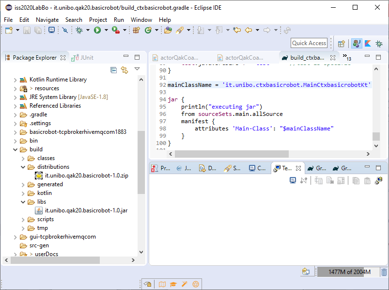

Introduction
This work is related to the projectRequirements
With reference to our previous work basicrobot | A reusable FSM actor, let us introduce a more precise set of requirements:reqCmd : the 'basicrobot' must execute commands of the formcmd(MOVE), MOVE=w|s|r|l|h sent to it by means of adispatch withmsgId=cmd ;reqStep : the 'basicrobot' must execute commands of the formstep(TIME) sent to it by means of arequest withmsgId=step . It must send the answerstepDone orstepFail in case of success or failure, respectively;reqSensor : the 'basicrobot' must emits events related to information gather from its sensors. In particular, it must emit the eventobstacle when a obstacle with some obstacle is detected;reqEnd : the 'basicrobot' must terminate its work when it receives adispatch withmsgId=end
Dispatch cmd : cmd(MOVE)//MOVE=w|s|r|l|h Dispatch end : end(ARG) Event obstacle : obstacle( ARG ) Request step : step( TIME )//TIME: an INT > 0 Reply stepdone : stepdone(ARG) Reply stepfail : stepfail(DURATION, CAUSE)//CAUSE: reason of failure
Requirement analysis
Let us introduce a model for the 'basicrobot' expressed as a QAkactor:
Context |
 |
Test plans
A functional TestPlan can be introduced as a JUnit structured as follows:
The full code is in testBasicrobot.kt, project it.unibo.qak20.basicrobot |
suspend fun ObservablesAny QAkactor works as a (Moreover, the current state of the resource can be stored as a String (in the variable Thus, our TestPlan can be based on the assumption that the actor 'basicrobot' updates
suspend funNote that the TestUnit will not receive any (stepDone) answer, since it is an 'alien' that works by directly inserting (via |
Problem analysis
the 'basicrobot' does not known in advance the components that will interact with it
However, a 'basicrobot' working as a QAkactor can receive messages in different ways:
- on a two-way TCP-connection on the port (
8020 ) defined in its context - on the MQTT topic named unibo/qak/basicrobot (if a
mqttBroker is specified in the model) - via CoAP with path ctxbasicrobot/basicrobot
Aliens
The QAK-infrastructure takes care of managing in the proper way the interactions with external components (other QAkactors or 'aliens').- An example of an 'alien' written in Python that uses TCP is in resources/python/basicrobotusageTCP.py
- An example of an 'alien' written in Koltin that uses CoAP is in resources/coap/actortQakCoapClient.kt
- An example of a CoAP observer in Koltin is in resources/coap/actorQakCoapObserver.kt
Project
The basicrobot project modelbasicrobot.qak in project it.unibo.qak20.basicrobot |
The 'basicrobot'
|
Deployment
With reference to the project it.unibo.qak20.basicrobot:- update the generated file build_ctxbasicrobot.gradle by specifying the class of the main program
plugins { id 'java' id 'org.jetbrains.kotlin.jvm' version '1.3.21' id 'application' } ...mainClassName = 'it.unibo.ctxBls.MainCtxBlsKt ' jar { println("executing jar") from sourceSets.main.allSource manifest { attributes 'Main-Class': "$mainClassName" } }The generated file build_ctxbasicrobot.gradle must be properly edit by the Application designer.
Note that the main class name must be terminated with aKt , since kotlin code is translated in Java. - execute the command
gradle -b build_ctxbasicrobot.gradle distZip Generates the distribution file is the directory build/distributions  - Now:
- unzip the distribution file in some dir
- work in the
bin directory copy in this directory the files
Run the system
On Windows: activate the system by running: it.unibo.qakintro2020.bat
On Linux (Apple ?) :bash it.unibo.qakintro2020